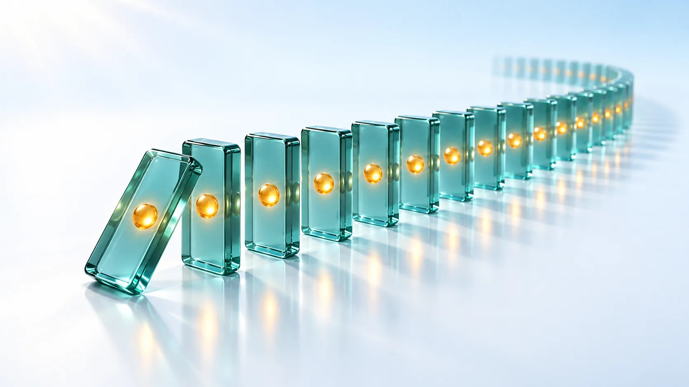
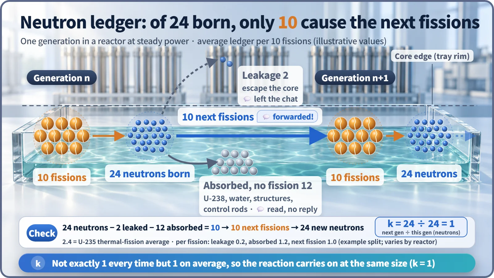
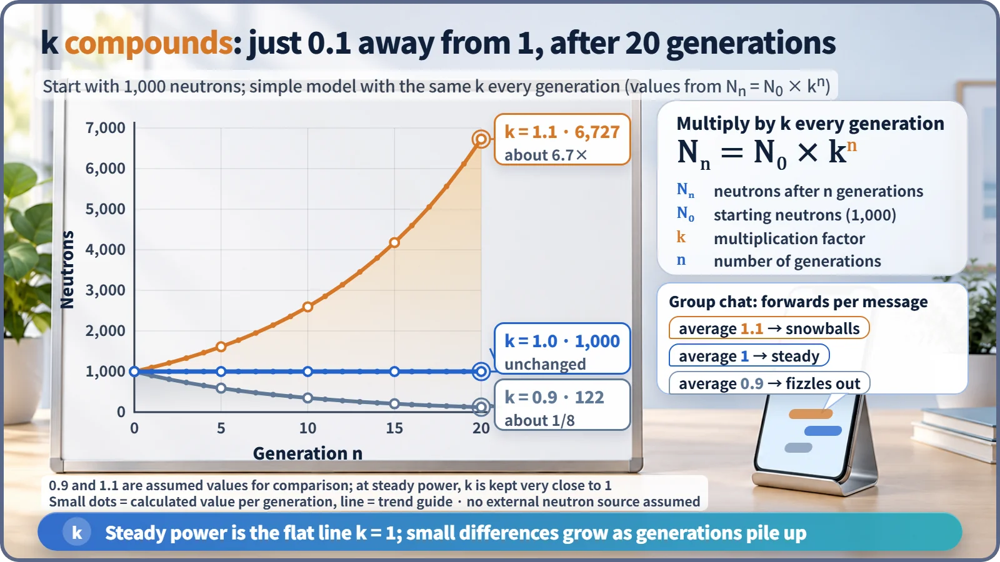

Nuclear Reactions & Fission · 033
Why Some Group-Chat Messages Spread and Others Fizzle — What a Chain Reaction Really Is
A chain reaction is a structure, not an explosion: how fast it grows is set by k, the ratio between neutron generations.

In a fission chain reaction, neutrons from one fission cause the next fissions, so the reaction keeps itself going. Whether it grows, holds steady or dies away is set by the multiplication factor k, the ratio of neutrons from one generation to the next; a power reactor at steady output keeps k at exactly 1. [1]
"Please share this with everyone you know!"
You've probably received a message like this in your family group chat. How far it spreads comes down to one thing: on average, how many people does each recipient forward it to?
If each person passes it on to 0.9 people on average, the message shrinks a little at every step and fizzles out. At exactly 1 person, it keeps circulating at the same size. At 1.1 people, it snowballs. The chain reaction in a nuclear reactor has exactly this structure, except that what gets passed along is a tiny particle called a neutron.
A chain reaction in one sentence
A nuclear fission chain reaction is a process in which neutrons released by fission split other nuclei, and the neutrons from those splits cause the next fissions, so the reaction keeps itself going.
When a uranium-235 nucleus absorbs a neutron, it splits in two, releasing heat along with an average of about 2.4 new neutrons. There's no such thing as 0.4 of a neutron: each fission releases 2 or 3, and the average works out to about 2.4. Each reaction produces the very ingredient needed for the next one, just as the person who receives the message becomes the next sender. [2]
Not all 2.4 get to work: the neutron ledger
"If each fission releases 2.4 neutrons, doesn't the number grow 2.4 times every round?" It doesn't. Newborn neutrons scatter down three paths.
| Path | What happens | Group-chat version |
|---|---|---|
| Leakage | Escapes from the reactor core, the central region where the fuel sits | The message leaks out of the chat |
| Absorption without fission | Caught by uranium-238, cooling water, structural materials or control rods | Read, but sent to no one |
| Next fission | Absorbed by uranium-235 and causes another fission | A real forward |
For a reactor running at steady power, the ledger looks roughly like this: 2.4 neutrons are born, about 0.2 leak out, about 1.2 are absorbed without fission, and only 1, on average, goes on to the next fission. Scaled up to 10 fissions: 24 neutrons are born, 2 leak, 12 are absorbed and 10 cause the next 10 fissions. The split between leakage and absorption is an example that varies with reactor type and state, but "only 1 on average goes on" always holds at steady power.

The number that multiplies every generation: k
It helps to cut this flow into "generations": from the birth of a batch of neutrons, through their scattering, until some of them cause the next fissions and a new batch is born. The ratio between generations is the multiplication factor, k:
k = neutrons in this generation ÷ neutrons in the previous generation
The group chat's "average number of forwards" is exactly k. In the ledger, 10 fissions lead to 10 fissions, 24 neutrons are born again, and k = 24 ÷ 24 = 1. [3]
What makes k a bit scary is that it multiplies every generation. Starting with N₀ neutrons, after n generations there are Nₙ = N₀ × kⁿ.

| Generation n | k = 0.9 | k = 1.0 | k = 1.1 |
|---|---|---|---|
| 0 | 1,000 | 1,000 | 1,000 |
| 10 | 349 | 1,000 | 2,594 |
| 20 | 122 | 1,000 | 6,727 |
A difference of just 0.1 from 1, yet after 20 generations one side has fallen to about one-eighth while the other has grown 6.7 times. Change that multiplies by the same ratio at every step is called exponential change.
"Doesn't a chain reaction mean an explosion?"
A chain reaction only describes the structure of a reaction that keeps going; how fast it grows is set by k. A nuclear power plant keeps k at 1 by adjusting the control rods and the concentration of boron dissolved in the cooling water, so the same number of fissions happens every generation and heat comes out steadily. That is normal operation, so "k = 1 means the reaction has stopped" is also a misconception. To shut a reactor down, control rods are inserted to make k sufficiently smaller than 1.
Power reactor fuel is low-enriched uranium containing only about 3 to 5% uranium-235, so it cannot explode like a nuclear bomb. Reactors are also designed so that rising fuel temperature acts to lower k on its own when power rises. [4]
On December 2, 1942, in a laboratory beneath the stands of a University of Chicago athletic field, Enrico Fermi's team created the first self-sustaining chain reaction. They pulled cadmium control rods out little by little to bring k to 1, and the reaction carried on quietly for about 28 minutes at a power too weak to light a single light bulb: not an explosion but a slow reaction held firmly in hand. [5]
One generation is shorter than the blink of an eye
Counting only the neutrons that burst out at the moment of fission, a generation lasts around one ten-thousandth of a second, so thousands to tens of thousands of generations pass every second. About 0.65% of neutrons, however, are delayed neutrons that emerge seconds to tens of seconds later, and they slow the whole process down enough to control.
Key takeaways
A chain reaction is fission producing neutrons and some of those neutrons producing the next fissions, generation after generation. How much it grows or shrinks is set by k, and a reactor is essentially a machine that keeps k pinned at exactly 1. How many people you forward a message to is, in reactor terms, k.